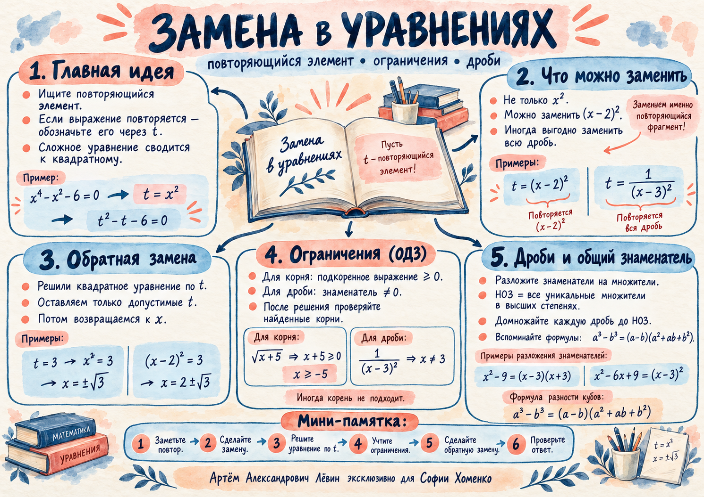

Квадратный корень
√A(x) определён, когда A(x) ≥ 0.
Сегодняшняя ключевая идея — находить повторяющийся фрагмент и превращать сложное уравнение в знакомое квадратное. Затем аккуратно учитывать ограничения, возвращаться к x и проверять результат.
Лёвин Артём Александрович эксклюзивно для Софии Хоменко
t = 3 подходит; t = −2 исключаем. Обратная замена: x = ±√3.
В уравнении x⁴ − x² − 6 = 0 степень четыре возникает из квадрата x². Поэтому при t = x² получаем обычное квадратное уравнение.
Для (x − 2)⁴ − (x − 2)² − 6 = 0 заменяем t = (x − 2)² ≥ 0. Получаем тот же результат t = 3.
В этом примере замена только (x − 3)² оставит дроби. Удобнее заменить весь дробный фрагмент.
Исходная ОДЗ: x ≠ 3. Так как t > 0, допустимо только t = 3. Тогда (x − 3)² = 1/3.
√A(x) определён, когда A(x) ≥ 0.
1/B(x) определена, когда B(x) ≠ 0.
Разберём уравнение из пособия:
Важно: после алгебраического решения подставляйте кандидатов в исходные ограничения. Даже если одинаковые радикалы исчезли, ОДЗ сохраняется.
Для трёх знаменателей из занятия:
ОДЗ: x ≠ −3, 0, 3. Наименьший общий знаменатель:
| Знаменатель | Дополнительный множитель |
|---|---|
| (x − 3)(x + 3) | 2x(x − 3) |
| (x − 3)² | 2x(x + 3) |
| 2x(x + 3) | (x − 3)² |
Рассмотрим 3/(x² − 9) − 1/(x² − 6x + 9) = 3/(2x² + 6x). После переноса, приведения к НОЗ и умножения на него:
Кандидат x = −3 запрещён исходным знаменателем, остаётся x = 9.
В уравнении 1/(x − 3) + 10/(x² + 3x + 9) = 27/(x³ − 27) знаменатель (x − 3)(x² + 3x + 9) общий для всех дробей. ОДЗ: x ≠ 3.

Акварельная памятка по мотивам занятия. Откройте изображение для полноразмерного просмотра.
При замене указывайте t и его ограничения. В дробных уравнениях записывайте ОДЗ до преобразований. Ответы приведены по возрастанию.
t = x²; t = 1 или 4; x² = 1 или 4.
Ответ: −2; −1; 1; 2
t = x² ≥ 0; t = 4, а t = −1 отклоняется.
Ответ: −2; 2
t = (x − 1)²; t = 1 или 4.
Ответ: −1; 0; 2; 3
t = (x + 2)²; допустимо только t = 4.
Ответ: −4; 0
x ≠ 4; t = 1/(x − 4)² > 0; t = 4.
Ответ: 7/2; 9/2
x ≠ −1; t = 1/(x + 1)² > 0; t = 1 или 4.
Ответ: −2; −3/2; −1/2; 0
x ≥ 3; кандидаты 4 и −1. Остаётся x = 4.
Ответ: 4
x ≥ 5; кандидаты 4 и −1. Оба недопустимы.
Ответ: ∅
x ≠ −3, 0, 3; НОЗ = 2x(x − 3)²(x + 3); кандидаты −3 и 9.
Ответ: 9
x ≠ 3; x³ − 27 = (x − 3)(x² + 3x + 9); кандидаты −16 и 3.
Ответ: −16